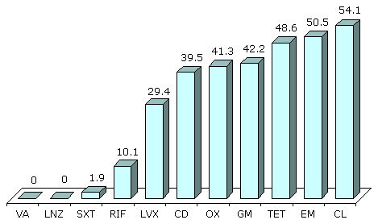

Antimicrobial Resistance :: Antimicrobial resistance in Russia : Nosocomial pathogens
Antimicrobial Resistance in Russia
Nosocomial pathogens
S.aureus and coagulase-negative staphylococci (CNS)
In multicenter survey of staphylococci susceptibility in Moscow and St-Petersburg (1998) considerable differences in MRSA prevalence between some hospitals were revealed. The resistance to oxacillin was more frequent in CNS (0-65.9%) than among S.aureus (0-40%). Generally in Moscow the rate of MRSA was 33.4% and 4.1% in St-Petersburg.
All staphylococci resistant to oxacillin retained susceptible to vancomycin. Susceptibility rates of MRSA to fusidic acid, rifampin and ciprofloxacin were 95%, 84% and 70%, respectively (as compared with 80%, 85% and 61% for CNS).
Results of multicenter study of S.aureus resistance in Russia («STENT») performed in 2001 are shown in the Figure 7.
|

Figure 7. Resistance (%) of S.aureus nosocomial strains (STENT, 2001)
Abbreviations:
VA - vancomycin; LNZ - linezolid; SXT - co-trimoxazole; RIF - rifampin;
LVX - levofloxacin; CD - clindamycin; OX - oxacillin; GM - gentamicin;
TET - tetracycline; EM - erythromycin; CL - chloramphenicol.
|
Enterococcus spp.
Sixteen percent of E.faecalis strains resistant to ampicillin were revealed in survey conducted in Moscow and St-Petersburg in 1995-1996, and considerable variations of resistance frequency were observed between hospitals. Level of resistance to strepromycin was 44% and 25% to gentamicin. Neither intermediate nor resistant to vancomycin strains were observed. Unlike E.faecalis 75% of E.faecium strains were resistant to ampicillin, when its susceptibility to other antimicrobials didn't differ noticeably.
With epidemiological purpose susceptibility testing of enterococci strains isolated from feces of premature newborn was conducted. Results of antimicrobial activity in vitro are presented in Table 8.
Generally E.faecium demonstrated higher resistance rate to antimicrobials tested with the exception of vancomycin, which activity was equal to all enterococci, and quinopristin/dalfopristin (3% resistant isolates among E.faecium against 15% among E.faecalis). Only 3% of E.faecalis were resistant to ampicillin comparing with 77% of E.faecium. The majority of E.faecium strains showed high level of resistance to aminoglycosides (64% to gentamicin and 56% to streptomycin).
A total of 2664 isolates were tested during the multicenter prospective study of antimicrobial resistance of nosocomial gram-negative pathogens. It was performed in 28 ICUs of 15 cities of Russia in 1997-1999 («NPRS-3») (see Table 9 and Figure 9).
Table 8. Resistance (%) of Enterococcus spp. in premature newborns (Smolensk, 1995-1996).
| Antimicrobial | E.faecalis (N=33) | E.faecium (N=61) |
|---|
| Ampicillin | 3 | 77 |
| Gentamicin | 0 | 64 |
| Streptomycin | 3 | 56 |
| Vancomycin | 9 * | 10 * |
| Chloramphenicol | 39 | 54 |
| Rifampicin | 88 | 93 |
| Quinupristin/Dalfopristin | 15 | 3 |
* Intermediate strains
The Enterobacteriaceae family
The resistance of Enterobacteriaceae family varied widely among different hospitals, reflecting the antibiotic policy.
E.coli strains manifested the highest resistance rates to ampicillin, piperacillin, cefuroxime. The most active against E.coli was imipenem, which was a subject for 100% susceptibility of E.coli strains. High activity was represented by piperacillin/tazobactam (6.3% resistance), III generation cefalosporins: ceftazidime (7.8% resistance), cefotaxime and ceftriaxone (approximate resistance 11%).
Significant level of resistance was obtained for K.pneumoniae regarding all the antimicrobials tested except amikacin (9% resistance) and imipenem (0% resistance). Highest resistance rates of Proteus spp. strains were found to ampicilin, cefuroxime, piperacillin, amoxicillin/clavulanate and gentamicin. Imipenem was active against all the Proteus spp. isolates. Great efficacy was shown by ceftazidime (6.9% resistance) and amikacin (3.4% resistance) either. Enterobacter spp. strains were highly resistant to piperacillin and cefuroxime, the most active was imipenem (no resistant strains).
Table 9. Resistance (%) of nosocomial strains of Enterobacteriaceae (NPRS-3).
| | E.coli
(N=489) | K.pneumoniae
(N=389) | Proteus spp.
(N=263) | Enterobacter spp.
(N=203) |
|---|
| Ampicillin | 49.7 | - | 71.5 | 80.3 |
| Piperacillin | 40.9 | 68.4 | 37.6 | 44.8 |
| Piperacillin/tazobactam | 6.3 | 30.1 | 8.7 | 29.1 |
| Amoxicillin/clavulanate | 35.8 | 56.0 | 32.7 | 89.7 |
| Cefuroxime | 19.2 | 57.3 | 51.3 | 63.1 |
| Cefotaxime | 11.0 | 37.5 | 20.9 | 29.1 |
| Ceftriaxone | 11.5 | 40.4 | 17.5 | 30.5 |
| Ceftazidime | 7.8 | 33.7 | 6.9 | 24.6 |
| Imipenem | 0 | 0 | 0 | 0 |
| Gentamicin | 20.9 | 55.8 | 43.3 | 24.1 |
| Amikacin | 2.2 | 9.0 | 3.4 | 2.5 |
| Ciprofloxacin | 8.4 | 12.9 | 8.7 | 5.9 |
Pseudomonas aeruginosa
In NPRS-1997 multicenter study P.aeruginosa strains represented a very high level of resistance to gentamicin as well as to piperacillin, piperacillin/tazobactam and ciprofloxacin. As shown in Figure 8, the most active against P.aeruginosa was amikacin (6.7% resistance) and ceftazidime (11.2% resistance).
|
Figure 8. Resistance (%) of P.aeruginosa nosocomial strains (NPRS-3)
Abbreviations:
PIP - piperacillin; PTZ - piperacillin/tazobactam; CAZ - ceftazidime;
IMP - imipinem; GM - gentamicin; AMI - amikacin; CIP - ciprofloxacin.
|
Acinetobacter spp.
Acinetobacter spp. strains isolated during the NPRS-3 survey (see Figure 9) manifested the highest resistance to piperacillin, piperacillin/tazobactam, ceftazidime, gentamicin and ciprofloxacin. Imipenem and amikacin possessed the maximal activity (0% and 8.7% resistance correspondingly).
|
Figure 9. Resistance (%) of Acinetobacter spp. nosocomial strains (NPRS-3)
Abbreviations:
PIP - piperacillin; PTZ - piperacillin/tazobactam; CAZ - ceftazidime;
IMP - imipinem; GM - gentamicin; AMI - amikacin; CIP - ciprofloxacin.
|
Summarizing the results of NPRS-3 project it is worth to mention the significant rate of gram-negative pathogens resistance to ampicillin, amoxicillin/clavulanate, piperacillin, cefuroxime and gentamicin, while imipenem and amikacin were active against the majority of the strains tested.
In «Micromax» survey (see Table 10) performed in 1998 in 8 Moscow, Smolensk and Ekaterinburg hospitals low resistance rate was obtained among E.coli and Proteus spp. to β-lactams with insignificant variations between different centres. At the same time high resistance of Klebsiella spp. to III generation cefalosporins was found (31-40%). This value regarding Cefepime was almost 2-fold lower - 16%. There was not found any E.coli, Proteus spp. or K.pneumoniae strains resistant to imipenem.
Table 10. Resistance (%) of nosocomial strains of Enterobacteriaceae (Micromax, 1999).
| Antimicrobial | E.coli | Proteus spp. | Klebsiella spp. |
|---|
| Piperacillin/tazobactam | 3 | 1 | 17 |
| Ceftriaxone | 13 | 10 | 40 |
| Ceftazidime | 5 | 3 | 31 |
| Cefepime | 3 | 3 | 16 |
| Imipenem | 0 | 0 | 0 |
| Ciprofloxacin | 12 | 15 | 14 |
Sources
- V.A. Kretchikov, A.V. Dekhnich, L.S. Stratchounski. Activity of linezolid against nosocomial strains of Staphylococcus aureus in Russia: results of multicenter study. In: 4th European Congress of Chemotherapy and Infection; 2002 May 4-7, Paris, France. International Journal of Antimicrobial Agents 2002; 19 Suppl 1; S94, Absrtact: PM221.
- L.S. Stratchounski, A.V. Dekhnitch, Ju.A. Belkova. Susceptibility of Staphylococcus aureus from hospitalised patients topical antimicrobials in Russia. CMAC 2002; 4(2):157-63.
- A.V. Dekhnich, I.A. Edelstain, A.D. Narezkina, G.E. Afinogenov, L.I. Akhmetova, L.G. Boronina, E.N. Gugutcidze, L.V. Gudkova, D.E. Zdzitovetcki, V.N. Ilyina, O.I. Kretchikova, N.E. Marusina, I.G. Multih, S.I. Pylaeva, I.V. Smirnov, T.N. Suborova, V.K. Taraban, N.M. Furletova, S.G. Hasanova, E.V. Schetinin, L.S. Stratchounski. Epidemiology of antimicrobial resistance of nosocomial strains of Staphylococcus aureus in Russia: results of prospective study. CMAC 2002; 4(4): 325-36.
- A. Dekhnitch, O. Kretchikova, R. Kozlov, L. Stratchounski. Antibiotic resistance of enterococci isolated from premature born infants. In: European Congress of Chemotherapy; 1998 May 10-13, Hamburg, Germany. P.104. Abstract: T273.
- L. Stratchounski, G. Reshedko, O. Stetsiouk, O. Kretchikova, E. Riabkova. Results of Russian country-wide surveillance of antimicrobial resistance of nosocomial gram-negative bacteria (ngnb) from 28 intensive care units (ICUs). In: 41st Interscience Conference on Antimicrobial Agents and Chemotherapy; 2001 Dec 16-19, Chicago, USA. P.113. Abstract: 67.
- Sidorenko S.V., Strachunskii L.S., Akhmedova L.I., Beloborodov V.B., Bogomolova N.S., Bol'shakov L.V., Dekhnich A.V., Karabak V.I., Malikov V.E., Pavlova M.V., Polikarpova S.V., Rudnov V.A., Iakovlev V.P. The results of a multicenter study of the comparative activity of cefepime and other antibiotics against the causative agents of severe hospital infections (the Micromax program). Antibiot Khimioter. 1999; 44(11): 7-16.
The last modification date: 01 Mar 2004